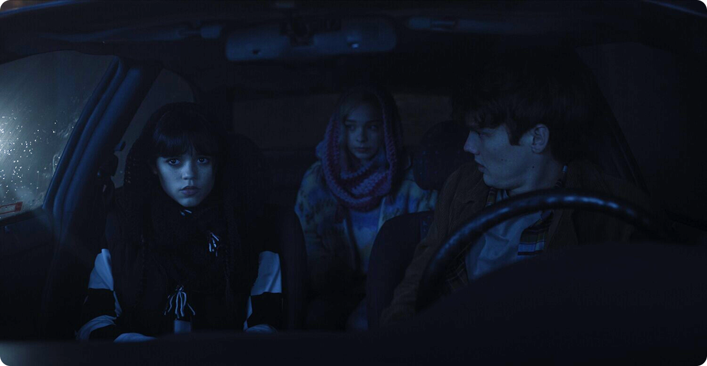
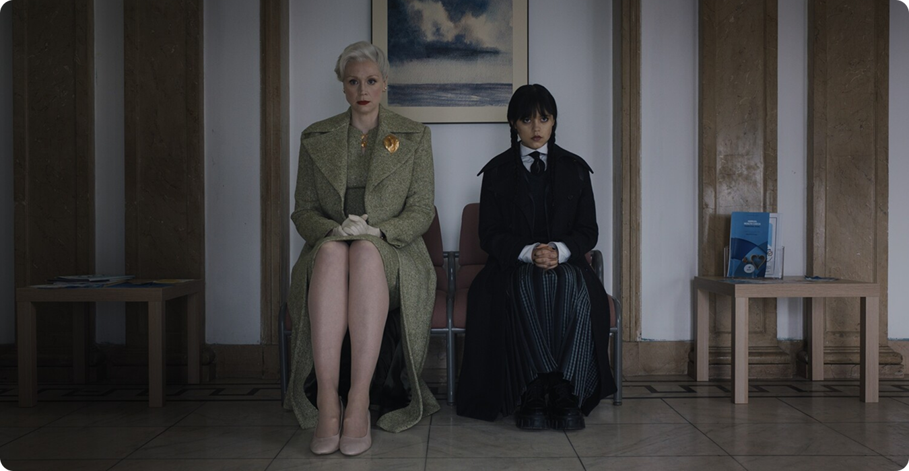

Иерархии среди «других»
На первый взгляд Невермор — место, где все
отличаются, а значит, равны. Однако на практике внутри
школы формируется чёткая иерархия. Ученики делятся не только
по способностям, но и по статусу, популярности
и степени соответствия ожиданиям.
Даже в среде аутсайдеров возникает понятие
«нормы». Кто‑то оказывается более принятым,
кто‑то — на периферии. Это показывает важную вещь:
сама по себе инаковость не отменяет социальной
структуры. Люди склонны воспроизводить иерархии даже
в условиях, где они кажутся лишними.
Ярлыки как способ упрощения
Система школы активно использует ярлыки, чтобы сделать сложную
реальность управляемой. Персонажи воспринимаются не как
личности, а как набор характеристик:
- «странная»;
- «опасный»;
- «популярная»;
- «изгой».

Такие категории упрощают взаимодействие, но одновременно
ограничивают человека. Уэнсдей сталкивается с этим напрямую:
её образ фиксируется окружающими, и любые отклонения
от него вызывают сопротивление. Сериал показывает, что
ярлык — это не просто описание, а инструмент,
который закрепляет роль и сужает свободу поведения.
Механика давления: как работает система
Социальное давление в школе не выглядит как открытый
конфликт. Оно встроено в повседневность и проявляется
через повторяющиеся механизмы:
- ожидание «правильного» поведения;
- поощрение соответствия нормам;
- изоляция тех, кто не вписывается;
- формирование устойчивых групп и ролей.
Этот план показывает, что контроль осуществляется не через
силу, а через среду. Человек постепенно адаптируется, даже
если изначально сопротивляется. Именно поэтому система кажется
естественной — она не навязывается напрямую.
Вывод
«Уэнсдей» демонстрирует, что школа — это
не просто место обучения, а пространство формирования
социальных моделей. То, как распределяются роли, как работают
ярлыки и как возникает давление, напрямую отражает устройство
более широкого общества.

Сериал поднимает важный вопрос: если даже в среде
«инаковых» воспроизводятся те же механизмы,
возможно ли вообще пространство без иерархий? Ответ
не даётся напрямую, но наблюдение остаётся
очевидным —проблема не в конкретной системе,
а в самой человеческой склонности упрощать, делить
и контролировать.
Именно поэтому история работает шире, чем подростковый сюжет. Она
показывает, как легко общество создаёт рамки —
и как сложно из них выйти.